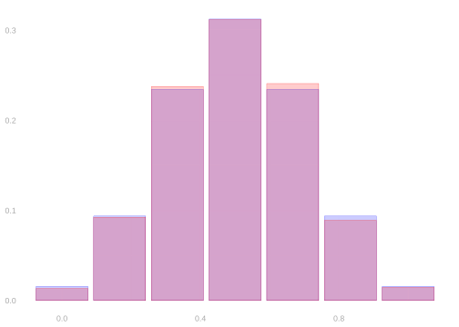
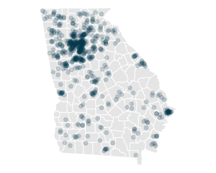
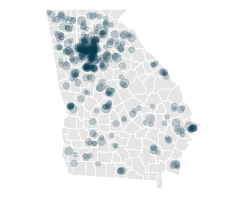

13 Calibrating Interval Estimates using the Bootstrap
Review
$$ \newcommand{X}{} \newcommand{Y}{}
$$
To calibrate an interval estimate, we add ‘arms’ of equal length to our point estimate. We choose the arm length so that, in 95% of surveys done like ours, the estimation target is within them. We can’t choose that length without the sampling distribution of our point estimate, and we don’t have it. So we estimate it. That’s what Chapter 12 does: plug a sample frequency \(\hat\theta\) into the Binomial formula from Chapter 9 and read the width off the result.
\[ \hat P\p*{\sum_{i=1}^n Y_i = s} = \binom{n}{s} \hat\theta^{s} (1-\hat\theta)^{n-s} \]
Both of the sampling distributions we’ve worked out came to us as a parametric form. By parametric form, I mean a formula in terms of some parameters. That tells us what parameters we need to estimate to estimate the sampling distribution. Sampling with replacement, the Binomial’s one parameter is the population frequency \(\theta\), which is what we’re trying to estimate anyway. Sampling without replacement, Chapter 11, it’s the Hypergeometric, and there are two parameters we don’t know—the population size \(m\) and the number of ones \(m_1\)—so we plug in \(m\hat\theta\) for the second.
That’s what we’re about to give up.
An Exercise
Bootstrapping by Hand
Here’s an exercise you can do with classmates, friends, or—if you don’t have any—imaginary characters you act out yourself.
Suppose you’ve run a small survey. You’ve polled 6 people, asking whether they’ll vote. Here’s what you got.
\[ \begin{array}{r|rrrrrr|r} i & 1 & 2 & 3 & 4 & 5 & 6 & \bar{Y}_{6} \\ Y_i & 0 & 0 & 0 & 1 & 1 & 1 & 0.5 \\ \end{array} \]
We’re going to estimate the sampling distribution in a new way. It’ll be a lot like calculating the actual sampling distribution: we’ll draw a sample of size \(n\) with replacement, use it to calculate our estimator, and repeat. What’s different is the population we’re drawing our sample from. We don’t have responses from the whole population, so we’ll draw from the closest thing we’ve got: the sample. We call this bootstrapping. The estimate of the sampling distribution we get is called the bootstrap sampling distribution.
Simulating a Few More Draws
If you have access to a computer, you can simulate many more draws.
draws = 1:10000 |> map_vec(function(.) {
Jstar = sample(1:nexercise, nexercise, replace=TRUE)
Ystar = Yexercise[Jstar]
mean(Ystar)
})
computer.tally = as.data.frame(table(draws)) |>
rename(theta.hat=draws, count=Freq)Discussion
Put the tally from your rolls into count and run it. Your histogram goes up against our binomial estimate of the sampling distribution.

If all has gone to plan, your histogram looks a lot like our binomial estimate of the sampling distribution. Substituting in a computer tally of 10,000 draws from the bootstrap sampling distribution, Figure 15.1, we nail it. It looks like the bootstrap sampling distribution is the binomial estimate.
The Bootstrap
The Bootstrap Interpretation in Our Turnout Poll



The sampling distribution estimate we’ve used was \(\text{Binomial}(n,\hat\theta)\) for \(n=625\) and \(\hat\theta \approx 0.68\). It’s the distribution of the proportion of heads in 625 flips of a coin with probability \(\hat\theta \approx 0.68\) of heads, where \(\hat\theta \approx 0.68\) is the proportion of voters we’ve polled who will vote.
That is, it’s the sampling distribution of a ‘poll’ of the people in our sample: roll a 625-sided die 625 times, call up the corresponding person in our sample, and count up the yeses we hear. This is random because we’re drawing with replacement. Each time we run this poll, we call each person in our sample 0, 1, 2, … times, and the number of times we call them is random.
If we plot our voters on a map, you can see the idea in visual terms. On the left, we have the population. In the middle, we have our sample, drawn with replacement from the population. On the right, we have a bootstrap sample—a new sample drawn with replacement from the sample.
Each ‘call’ that a person receives increases the size of their dot: circle area is proportional to number of calls. In the sample, even though it’s drawn with replacement, all dots are the same size—because we draw from such a large population, nobody gets called twice. In the bootstrap sample, dots vary in size—because we draw \(n\) people from a sample of size \(n\), it’s almost impossible not to call somebody twice.
Bootstrapping
Before the election, we don’t observe the population. But we do observe the sample. And we can sample from the sample, acting as if it were the population. We’ll take repeated random samples of size 625, with replacement, from our sample of size 625.
We call these bootstrap samples and estimates based on them bootstrap estimates. The distribution of these estimates is called the bootstrap sampling distribution. If the sample is like the population, this should be like our estimator’s actual sampling distribution.
The Sample \[ \begin{array}{r|rrrr|r} i & 1 & 2 & \dots & 625 & \bar{Y}_{625} \\ Y_i & 1 & 1 & \dots & 1 & 0.68 \\ \end{array} \]
The Bootstrap Sample
\[ \begin{array}{r|rrrr|r} i & 1 & 2 & \dots & 625 & \bar{Y}_{625}^* \\ Y_i^* & 1 & 0 & \dots & 0 & 0.67 \\ \end{array} \]
The Population
\[ \begin{array}{r|rrrr|r} j & 1 & 2 & \dots & 7.23M & \bar{y}_{7.23M} \\ y_{j} & 1 & 1 & \dots & 1 & 0.70 \\ \end{array} \]
The ‘Bootstrap Population’ — The Sample \[ \begin{array}{r|rrrr|r} j & 1 & 2 & \dots & 625 & \bar{y}^*_{625} \\ y_j^* & 1 & 1 & \dots & 1 & 0.68 \\ \end{array} \]
We use stars to distinguish the bootstrap sample from our original sample—we write \(Y_i^*\) and \(\bar Y^*\).
The Bootstrap is Nonparametric
bootstrap.samples = array(dim=10000)
for(rr in 1:10000) {
Y.star = Y[sample(1:n, n, replace=TRUE)]
bootstrap.samples[rr] = mean(Y.star)
}
We do not need to know the parametric form of our sampling distribution to use the bootstrap. All we do is re-run our poll acting as if our sample were the population. We can do this no matter what we’re estimating. So let’s try it out on something where we don’t know the parametric form.
Beyond Binary Responses
Vote History
So far we’ve asked a binary question: will you vote? But voter files contain richer information. For each registered voter, we can see how many of the last 5 elections they voted in. Let’s call this vote history, and denote it \(H_i\) for the people in our sample and \(h_j\) for the people in the population.
\[ \begin{array}{r|rrrr|r} i & 1 & 2 & \dots & 625 & \bar{H}_{625} \\ H_i & 1 & 4 & \dots & 2 & 2.8 \\ \end{array} \]
We might want to estimate the average vote history in the population. Our point estimate would be the sample mean, \(\bar H_n = 2.8\). But what about the sampling distribution?
When the response was binary, we knew the parametric form: Binomial. The mean of \(n\) binary responses, each equal to 1 with probability \(\theta\), has a \(\text{Binomial}(n, \theta)/n\) distribution. But now our responses take values in \(\{0, 1, 2, 3, 4, 5\}\). There’s no simple parametric form for the distribution of their mean.
We could work one out. A response \(H_i\) has some probability \(p_0\) of being 0, \(p_1\) of being 1, and so on. The sum \(H_1 + \ldots + H_n\) is a sum of \(n\) such random variables, and its distribution could be computed by convolution. But that’s a pain. And it would be an even bigger pain if our responses were continuous.
The bootstrap gives us a way out. We don’t need to know the parametric form. We just resample from the sample.
The Sampling Distribution of Average Vote History
mean.history.samples = array(dim=10000)
for(rr in 1:10000) {
I = sample(1:m, n, replace=TRUE)
Hsam = h[I]
mean.history.samples[rr] = mean(Hsam)
}
Here’s what the sampling distribution of average vote history looks like. As before, if we can estimate it we can use that estimate to get a 95% confidence interval. But, unlike before, we don’t have a nice parametric form like the Binomial. So we’ll use the bootstrap to estimate it.
The Bootstrap Sampling Distribution of Average Vote History
history.bootstrap.samples = array(dim=10000)
for(rr in 1:10000) {
I = sample(1:n, n, replace=TRUE)
Hstar = H[I]
history.bootstrap.samples[rr] = mean(Hstar)
}

It looks like it works in this case. The bootstrap sampling distribution is a good approximation to the actual sampling distribution, and the interval widths are similar.
But we’re no longer able to argue that it should work the way we did before. For the binary case, we took advantage of our knowledge of the parametric form—we knew the bootstrap sampling distribution was the plug-in binomial estimate. And we don’t have that now.
We’ll get there. But we’ll need a few new tools we’ll develop in the coming weeks: normal approximation, which gives us a parametric form for an approximation to our estimator’s sampling distribution, and techniques for variance calculation, which help us understand the parameters that go into it.